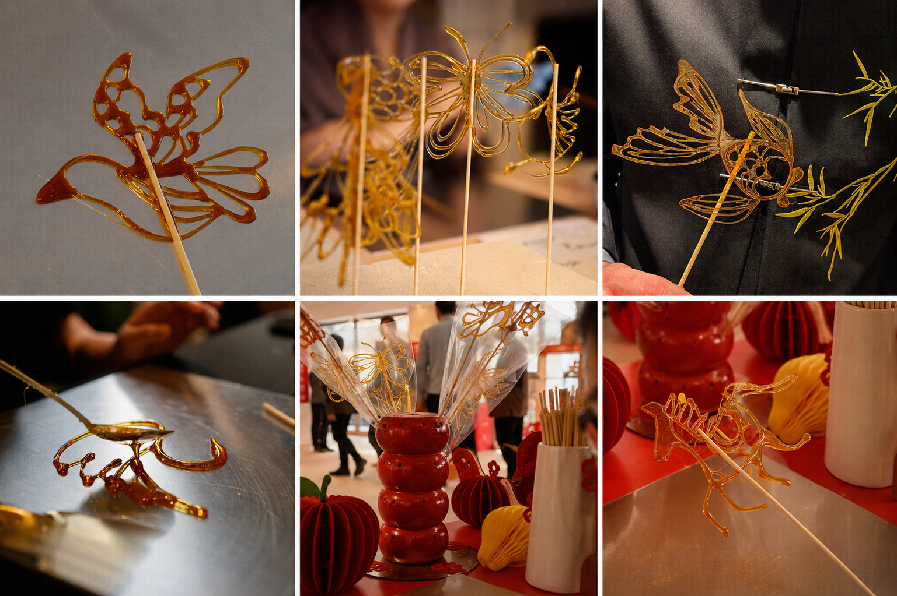

Photo 1: Our sugar painting artist creating a traditional flying bird design.
Photo 2: A handmade butterfly sugar painting created at a children’s birthday party.
Photo 3: Sugar painting featured at a marketing event hosted by London Square.
Photo 4: A swan sugar painting being crafted at a children’s birthday party.
Photos 5–6: Sugar painting showcased at a private Chinese New Year celebration for the Year of the Horse at Park Modern, London.
To respect the privacy of our clients and children attending our events, we do not share photographs that reveal guests’ faces.